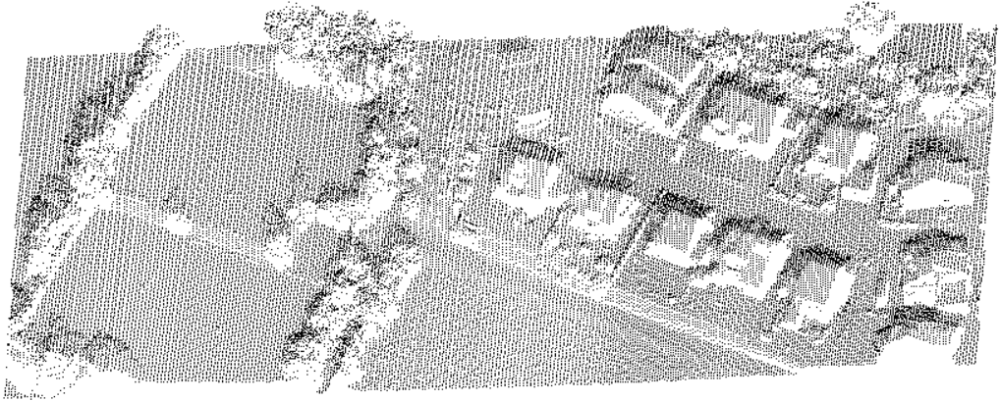
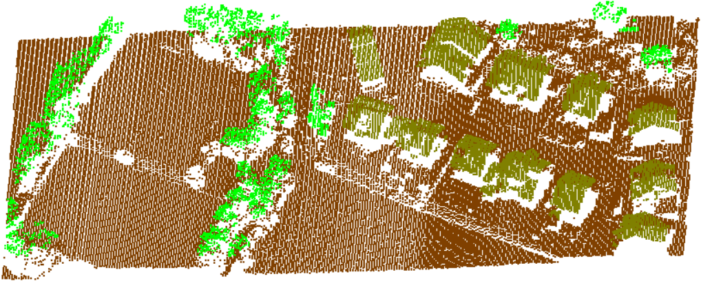
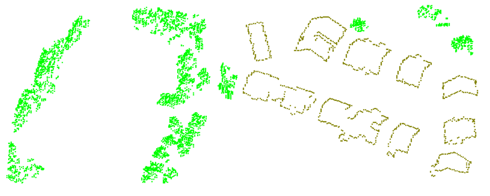
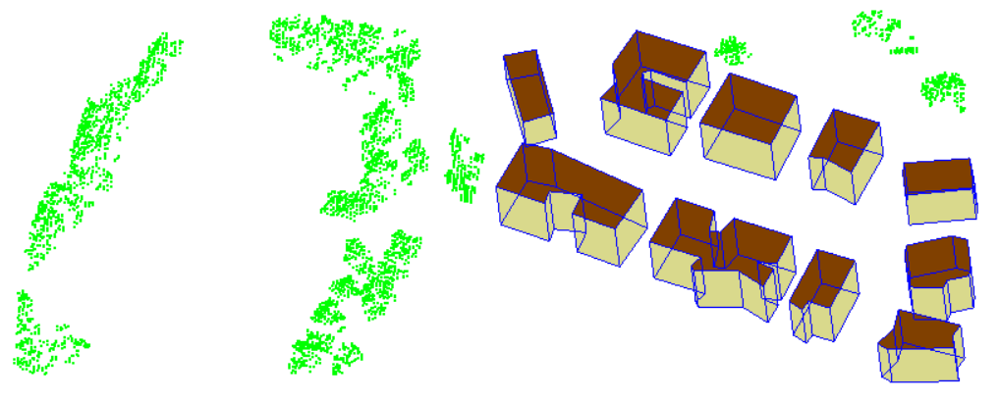

Current project performs classification of a point cloud to Ground, Vegetation and Buildings and than visualizes members of these classes using OpenGL library. The input point cloud is a part of result of aerial laser scanning of a village. The input point cloud looks like the following:
Result of classification is presented on the next picture. Brown points represent Ground, green points are Vegetation, beige points belong to Buildings:
During execution the program performs the following actions:
Interface description:
The following image shows vegetation and building outlines only:
Visualization of vegetation and building models:
